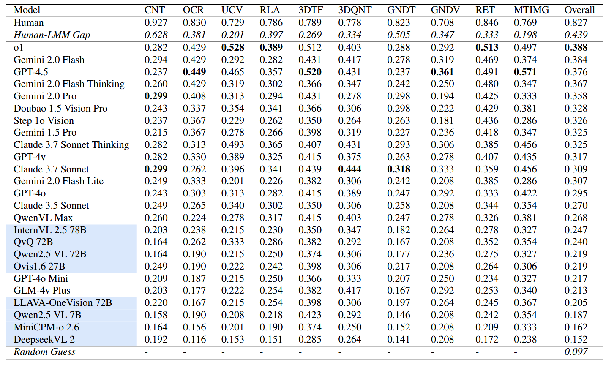

MOAT (Multimodal model Of All Trades) is a challenging benchmark for large multimodal models (LMMs). It consists of vision language (VL) tasks that require the LMM to integrate several VL capabilities and engage in human-like generalist visual problem solving. Moreover, many tasks in MOAT focus on LMMs' capability to ground complex text and visual instructions, which is crucial for the application of LMMs in-the-wild. Developing on the VL capability taxonomies proposed in previous benchmark papers, we define 10 fundamental VL capabilities in MOAT.
Notably, we purposefully insulated MOAT from the influence of domain knowledge, text generation style, and other external factors by making the questions close-ended (i.e. have a single short answer) and solvable with the information and hints provided in the question itself. This allows MOAT to focus on fundamental generalist VL capabilities. We also did not include VL capabilities like general object recognition and attribute recognition in our taxonomy, since these are required by all MOAT tasks, and performance on these fronts can be reflected in the overall accuracy on MOAT.
MOAT tasks require LMMs to integrate up to 6 fundamental VL capabilities. We report the proportion of questions requiring each VL capability, the distribution of the number of VL capabilities required, and the 15 most common capability combinations required in MOAT.
ALL existing LMMs, proprietary and open source, perform very poorly on MOAT, with the best performing model (OpenAI o1) achieving an accuracy (38.8%) less than half of that achieved by humans (82.7%). For individual VL capabilities, CNT, RLA, 3DTF and 3DQNT saw consistent poor performance by LMMs. In addition, GNDT and GNDV performance did not scale well with model size. Please refer to our paper for more detailed analysis of the results, as well as discussion on the implication of LMM architecture choices such as tiling and built-in CoT reasoning (or 'thinking') capability.
We intend to further increase the diversity of the tasks in MOAT, involving more capability combinations and encompassing more domains and scenarios. Stay tuned!